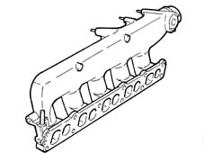

1072B inlet manifolds
- Path
- Descriptions > 10 ENGINE > 1072 INLET AND EXHAUST MANIFOLDS > 1072B inlet manifolds
- Kind
- system description
- Applies to
- engines: 1.6 TS , 1.8 TS, 2.5 V6, 3.2 V6, 1.9 JTD 8v , 1.9 JTD 16v, 2.4 JTD 10v; all production periods
- Interactive page
- https://sloeber94.github.io/elrnDB-a156/en/#/3232846
Applies to: engines: 2.5 V6; all production periods
In steel, one per cylinder, connecting the intake chamber to the cylinder heads.
Applies to: engines: 3.2 V6; all production periods
CONSTRUCTION FEATURES
The intake parts are in steel, one per cylinder, connecting the intake air chamber to the cylinder heads.
Applies to: engines: 1.9 JTD 8v , 2.4 JTD 10v; all production periods
INTAKE CHAMBER
Made from aluminium and receives pressurized air, cooled by the intercooler, and conveys it directly to the cylinder head.
The excess pressure sensor, connected to the injection control unit, is fitted on the chamber.

Applies to: engines: 1.9 JTD 16v; all production periods
SPECIFCATIONS
Operation
The air chamber is made from aluminium and receives pressurized air, cooled by the intercooler, and conveys it directly to the cylinder head.
A throttle body fitted to the air chamber intake is controlled by the injection control unit.
In order to limit engine shake during switching off, the injection control unit controls the closure of the throttle, while the throttle remains open under all other service condtiions.
An intake air temperature and excess pressure sensor 1060G pressure pump electric control connected to the injection control unit, is fitted on the chamber.